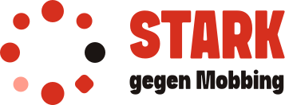

1 / 6

Stark seinkann manlernen.
2 / 6
Stark gegen Mobbing ist ein Theaterworkshop für Kinder und Jugendliche – mit und ohne Behinderung.
3 / 6
Auf der Bühne üben wir, was im Alltag oft schwerfällt: für sich selbst einzustehen.
4 / 6
Wir schauen auf das, was Kinder können. Nicht auf ihre Schwächen.
5 / 6
Drei Formate, ein Ziel:
01Lesung
02Kennlerntag
03Workshop
6 / 6
Neugierig?
Fragt einen Kennlerntag an. Link in der Bio.
Kennlerntag anfragen
Ein Projekt des Taekwondo Team Kocer e.V.
1 / 5
Drei Menschen,ein Ziel.
Das Team hinter Stark gegen Mobbing.
2 / 5
Sebastian Kolb
Schauspieler und Theaterpädagoge
Bekannt aus Tatort und Unter uns. Stimm- und Atemcoach. Leitet die Workshops.
„[Warum ist dir das Projekt wichtig?]“
3 / 5
CH
Claudia Herhold
Pädagogin und Sprachtherapeutin
Diplom-Pädagogin mit Schwerpunkt Sondererziehung und Rehabilitation, Expertin für Unterstützte Kommunikation, Buchautorin.
4 / 5
MK
Muhammed Koçer
Vorstand Taekwondo Team Kocer e.V.
Ausgezeichnet u. a. mit dem Bundesverdienstorden und der Sportplakette NRW.
5 / 5
Zusammen machen wir Kinder stark.
Kontakt: info@starkgegenmobbing.de
Cover 9:16
Hi, ich binSebastian.
Theater gegen Mobbing
Einblendung + Untertitel (Muster)
Sebastian Kolb
Schauspieler
Hi, ich bin Sebastian. Vielleicht kennt ihr mich aus dem Fernsehen.
Endkarte
Kennlerntaganfragen.
Link in Bio
1 / 5
Zuhören.Ausprobieren.Mitspielen.
Drei Formate, ein Ziel: Kinder stark machen.
2 / 5
01Lesung
Wir lesen aus Kinder- und Jugendbüchern über Mut, Freundschaft und Zusammenhalt. Danach ist Zeit für eure Fragen.
3 / 5
02Kennlerntag
Ihr probiert die Inhalte des Workshops spielerisch aus. Und findet selbst heraus, ob der Workshop etwas für euch ist.
4 / 5
03Workshop
Wir beschäftigen uns mit Resilienz, also der Kraft, schwierige Situationen gut zu überstehen. Am Ende bringen wir kleine Szenen auf die Bühne.
5 / 5
Alle Angebote sind inklusiv.
Der Workshop wird an jede Gruppe angepasst. Anfragen: Link in der Bio.
1 / 6
Wie läuft eigentlich ein Kennlerntag ab?
Wir zeigen es euch.
2 / 6
1Ankommen
Wir lernen uns kennen. Niemand muss etwas können, alle dürfen einfach da sein.
3 / 6
2Aufwärmen
Mit Bewegungs- und Kennlernspielen werden alle locker.
4 / 6
3Ausprobieren
Wir spielen erste kleine Szenen. Wer mag, macht mit. Wer lieber zuschaut, darf das auch.
5 / 6
4Reden
Im Kreis sprechen wir darüber, wie es sich angefühlt hat.
6 / 6
Und dann?
Ihr entscheidet selbst, ob ihr beim Workshop dabei sein wollt.
Variante A · Eltern
Für Eltern und Familien
So kommt ihr zu uns.
1Anfrage schicken – gern mit Alter und Größe der Gruppe.
2Wir melden uns mit einem Terminvorschlag.
3Termin vereinbaren: Kennlerntag, Lesung oder Workshop.
info@starkgegenmobbing.de
Variante B · Schulen und Einrichtungen
Für Schulen und Einrichtungen
So kommt ihr zu uns.
1Anfrage schicken – gern mit Alter und Größe der Gruppe.
2Wir melden uns mit einem Terminvorschlag.
3Termin vereinbaren: Kennlerntag, Lesung oder Workshop.
info@starkgegenmobbing.de
1 · Mut
Was macht dich stark?
Mut
Mut heißt nicht, keine Angst zu haben. Mut heißt, es trotzdem zu versuchen.
2 · Zusammenhalt
Was macht dich stark?
Zusammenhalt
Niemand muss es allein schaffen.
3 · Spielen
Was macht dich stark?
Spielen
Im Spiel darf man alles ausprobieren.
4 · Stärken
Was macht dich stark?
Stärken
Jede und jeder kann etwas richtig gut.
5 · Selbstbewusstsein
Was macht dich stark?
Selbstbewusstsein
Selbstbewusst sein heißt: Ich weiß, was ich kann.
6 · Resilienz
Was macht dich stark?
Resilienz
Resilienz ist die Kraft, nach einem schweren Moment wieder aufzustehen.
7 · Teamwork
Was macht dich stark?
Teamwork
Zusammen stemmen wir mehr.
8 · Vielfalt
Was macht dich stark?
Vielfalt
Anders sein ist bei uns normal.
Cover 9:16
Nein sagen
Drei Tipps von der Bühne
Tipp-Einblendungen (Muster)
Video Sebastian, ganzkörper
Tipp 1Stand
Tipp 2Blick
Tipp 3Stimme
Stell dich hin, die Füße fest auf dem Boden.
Endkarte
Wenn es nicht aufhört, hol dir Hilfe bei einem Erwachsenen.
Das ist nicht petzen.Das ist stark.
Einzelgrafik 4:5
Meine Stärken-Karte
Das kann ich richtig gut:
1.
2.
3.
Stark gegen Mobbing · Stark sein kann man lernen.
1 / 6
Für Eltern
Wird mein Kind gemobbt?
Anzeichen, auf die Eltern achten können.
2 / 6
Mögliche Anzeichen
Das Kind will nicht mehr zur Schule.
Es klagt morgens über Bauch- oder Kopfschmerzen.
Es zieht sich zurück.
3 / 6
Weitere Anzeichen
Sachen gehen kaputt oder verloren.
Einladungen und Freundschaften werden weniger.
Das Kind ist nervös, wenn das Handy vibriert.
4 / 6
Was hilft
Ruhig zuhören.
Glauben.
Keine Vorwürfe.
Gemeinsam überlegen, was als Nächstes passiert – nicht über den Kopf des Kindes hinweg.
5 / 6
Nächste Schritte
1Vorfälle mit Datum aufschreiben.
2Mit der Klassenleitung sprechen.
6 / 6
Hier gibt es Hilfe
Nummer gegen Kummer
Kinder- und Jugendtelefon
116 111
Elterntelefon
0800 111 0 550
Kostenlos und anonym.
1 / 6 · Alltagssprache
Vielfalt ist bei uns Alltag.
2 / 6
Bei Stark gegen Mobbing spielen Kinder und Jugendliche mit und ohne Behinderung zusammen Theater. Mit unterschiedlichen Erfahrungen und Blickwinkeln.
3 / 6
Das ist kein Zusatz, sondern unser Kern: Wer Vielfalt erlebt, lernt, dass anders sein normal ist.
Und das ist das beste Mittel gegen Mobbing.
4 / 6 · Leichte Sprache
Leichte Sprache
Bei uns machen alle mit.
Kinder mit Behinderung.
Und Kinder ohne Behinderung.
5 / 6 · Leichte Sprache
Leichte Sprache
Wir spielen zusammen Theater.
Jeder Mensch ist anders.
Das ist gut so.
6 / 6 · Leichte Sprache
Leichte Sprache
Alle können etwas gut.
Das zeigen wir auf der Bühne.
1 / 6
Warum macht ein Taekwondo-Verein Theater?
2 / 6
Im Taekwondo lernen Kinder
Haltung,Respektund Selbstbeherrschung.
3 / 6
Aber: Stark sein heißt nicht zuschlagen.
Die meisten Konflikte löst man mit Haltung, Blick und Stimme.
4 / 6
Genau das üben wir im Theater:
Für sich einstehen, ohne jemandem wehzutun.
5 / 6
Unser Verein engagiert sich mit vielen Ehrenamtlichen weit über den Sport hinaus. Stark gegen Mobbing ist eines unserer inklusiven Angebote.
6 / 6
Ein Projekt des Taekwondo Team Kocer e.V.
Gefördert von der Aktion Mensch.
Story 1 · Frage-Sticker
Was macht dich stark?
Schreib es uns!
Story 2 · Umfrage
Hast du schon mal Theater gespielt?
Story 3 · Quiz
Quiz
Was bedeutet Resilienz?
Folge-Post 4:5 · Wortwolke (Beispielbegriffe)
Was macht dich stark?
Das habt ihr uns erzählt.
MusikFreundeHumorFamilieMutHaustiere
Einzelgrafik 4:5
Buchtipp
[Titel]
[Autor:in] · ab [Alter] Jahren
Darum geht es: [ein Satz]
Darum lesen wir es: [ein Satz]
27. März
27. März · Welttag des Theaters
Theater macht stark.
Heute ist Welttag des Theaters.
5. Mai
5. Mai · Europäischer Protesttag zur Gleichstellung von Menschen mit Behinderung
Mitmachen dürfen ist kein Extra.
Es ist ein Recht.
5. November 2026
5. November · Internationaler Tag gegen Gewalt und Mobbing an Schulen
Hinschauen.Einschreiten.Zusammenhalten.
Nummer gegen Kummer: 116 111, kostenlos und anonym.
3. Dezember
3. Dezember · Internationaler Tag der Menschen mit Behinderung
Jede und jeder kann etwas richtig gut.